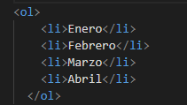
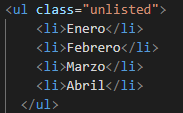
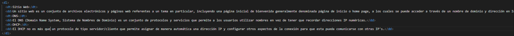

Etiquetas Semánticas, Listas y Enlaces
Aqui va un boton de busqueda
Listas en HTML
Definición: las listas en HTML permiten crear conjuntos de elemtnos en forma de listas y generalmente precedidos de un guión o un número
Existen varios tipos de listas:
Listas ordenadas:
Son quellas que muestran los elementos de una lista en orden, generalmente precedidos de un numero o letra que cumplen con esta regla. Se representan mediante la etiqueta OL (<ol>....</ol>), por ejemplo:- Enero
- Febrero
- Marzo
- Abril
El codigo de esta lista ordenada se ve así:
Listas desordenadas:
Como su nombre lo indica, son aquellas que muestran los elementos de una lista sin ningun tipo de orden, y la viñeta en este caso es un punto, un cuadrado, etc. Se representan mediante la etiqueta UL (<ul>....</ul>), por ejemplo:- Enero
- Febrero
- Marzo
- Abril
El codigo de esta lista desordenada se ve así:
Listas de Definiciones:
Se usan principalmente para mostrar información de la cual tenemos un valor y una definición. Se representan mediante la etiqueta dl (<dl>....</dl>). Por defecto los navegadores dejan el término y en la siguiente líne, junto con un tabulador, la definición. Por ejemplo:- Sitio Web
- Un sitio web es un conjunto de archivos electrónicos y páginas web referentes a un tema en particular, incluyendo una página inicial de bienvenida generalmente denominada página de inicio o home page, a los cuales se puede acceder a través de un nombre de dominio y dirección en Internet específicos
- DNS
- El DNS (Domain Name System, Sistema de Nombres de Dominio) es un conjunto de protocolos y servicios que permite a los usuarios utilizar nombres en vez de tener que recordar direcciones IP numéricas.
- DHCP
- El DHCP no es más que un protocolo de tipo servidor/cliente que permite asignar de manera automática una dirección IP y configurar otros aspectos de la conexión para que esta pueda comunicarse con otras IP's.
El codigo de esta lista de definicion se ve así (click en la imagen para ampliar):
{kind=link}
Referencias
- Listas no ordenadas (Introducción a XHTML). (2021). Recuperado el 14 de Julio de 2021, desde : https://uniwebsidad.com/libros/xhtml/capitulo-5/listas-no-ordenadas
- Listas ordenadas (Introducción a XHTML). (2021). Recuperado el 14 de Julio de 2021, desde: https://uniwebsidad.com/libros/xhtml/capitulo-5/listas-ordenadas
- Listas de definición (Introducción a XHTML). (2021). Recuperado el 14 de Julio de 2021, desde: https://uniwebsidad.com/libros/xhtml/capitulo-5/listas-de-definicion
Todos los derechos reservados 2021 - Sitio web creado por Julian Eduardo Onoa - julian.onoa@unadvirtual.edu.co |
|---|